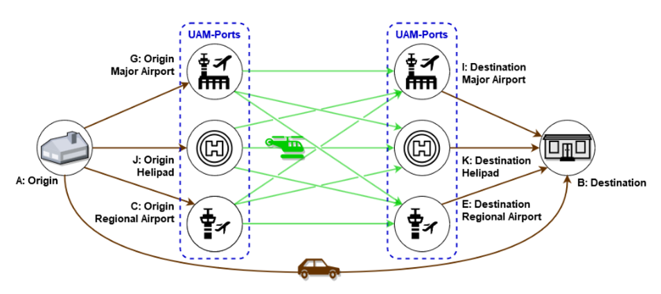

System-of-Systems UAM Research
Assessing the Suitability of UAM Vehicles for a Specific UAM-Aerodrome Network
Group: System-of-Systems Lab: UAM Operation Limits
Design Goals: Upon joining the team, I took initiative and developed my own research questions and pursued my interests in UAM vehicle design. I led a small team of undergraduates and developed a Direct Operating Cost model to compare vehicles, built a vehicle database of over 40 UAM vehicles, and wrote object-oriented classes for my modules. My paper was accepted to AIAA Aviation 2021.
